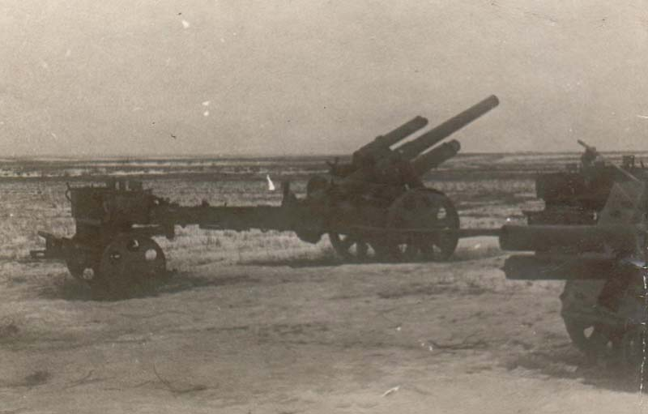
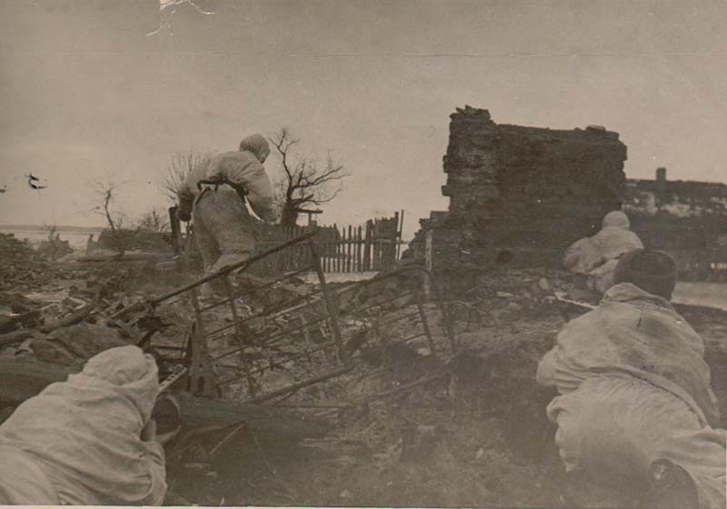

Немецкие войска, оборонявшиеся в полосе предстоящей Рогачёвско-Жлобинской операции, включали шесть пехотных дивизий 9-й армии под командованием генерала танковых войск Йозефа Харпе. Они занимали тщательно подготовленные оборонительные позиции, состоявшие из двух оборонительных полос. Города Рогачёв и Жлобин были превращены в укреплённые узлы сопротивления, прочно удерживаемые противником. К проведению операции привлекались силы нескольких советских армий: 3-я армия, части 50-й и 48-й армий, а также 16-я воздушная армия. Главная роль была отведена 3-й армии под командованием генерал-лейтенанта А. В. Горбатова. В её составе действовали два стрелковых корпуса - 41-й и 80-й, объединявшие восемь стрелковых дивизий, а также четыре артиллерийских полка была форсировать реку Днепр по льду и ударом с севера, обходя Рогачёв, захватить город и затем продолжить наступление в направлении Бобруйска. Таким образом, тщательно организованное наступление советских войск на основе скоординированных действий пехоты, артиллерии и танков было направлено на прорыв сильно укреплённых позиций противника и создание плацдарма для дальнейшего продвижения на важнейшем направлении операта резерва Главного Командования и танковый полк. Эта армия должнивных действий.
21 февраля советские войска 3-й армии начали наступление в районе Рогачёва. Их успех был обеспечен неожиданным манёвром: атака началась одновременно с артиллерийской подготовкой, а не после неё, что застало противника врасплох. В темноте советские части преодолели пойму реки Днепр, подошли к её правому обрывистому берегу и уже к началу активных боевых действий находились в так называемом «мёртвом пространстве» - зоне, недосягаемой для огня противника. К десяти часам утра передний край врага, оснащённый двумя-тремя траншеями и несколькими населенными пунктами на берегу, был практически полностью занят советскими войсками. В некоторых местах продвижение достигало двух-трёх километров. Особенно яростные бои шли за село Кистени, превращённое в сильный опорный пункт с круговой обороной. За первый день боёв был захвачен плацдарм протяжённостью 14 километров по фронту и глубиной до пяти километров. Однако тактическая оборона противника, из-за отставания советской артиллерии, ещё не была прорвана. В течение первых суток к Рогачёву подошёл сводный лыжный отряд и 8-й отдельный штрафной батальон, начав действия по тылам противника. Лыжники перекрыли все пути отхода и подходы к городу со стороны Мадоры и Быхова, включая железнодорожную линию Могилёв - Рогачёв, что лишило немцев радиальных путей к отступлению и облегчил их окружение. В последующие пять дней отряд проводил рейды по тылам врага, уничтожая гарнизоны, устраивая засады и уничтожая колонны, что способствовало соединению с наступающими частями Красной Армии. За эти успехи командующий армией А. В. Горбатов досрочно снял судимость со всех штрафников, участвовавших в рейде - необычное решение, обычно применяемое только к бойцам, проявившим храбрость в бою. 22 февраля, на второй день наступления, советские войска овладели такими населёнными пунктами, как Желиховка, Двойчаны, Осиновка, Александровка и Мадоры. У стационарных позиций у Старого Села 41-й стрелковый корпус закрепил связь со сводным лыжным отрядом. В этот же день левофланговые соединения 50-й армии приступили к наступательным действиям. 23 февраля, на третий день, советские войска прорвали тактическую оборону врага. Утром 80-й стрелковый корпус из 50-й армии захватил станцию Тощица. 40-й и 41-й стрелковые корпуса 3-й армии вышли к реке Друть и успешно подошли к Рогачёву с северо-востока и юго-востока. Войска 41-го корпуса захватили бой за город и начали борьбу за контроль над ним. Группа армий «Центр» подтянула к городу резервы - 5-ю и 4-ю танковые дивизии, а также 20-ю танковую дивизию и 221-ю охранную дивизию, выступая на случай усиления сопротивления. В ночь на 24 февраля 3-я армия вновь освободила Рогачёв, отбросив противника и захватив небольшой плацдарм за рекой Друть. В то же время 41-й корпус захватил два небольших плацдарма у города, однако, после сильных контратак врага, был вынужден их оставить. Войска южнее Рогачёва ликвидировали вражеский плацдарм на левом берегу Днепра и приблизились к Жлобину. В дальнейшем 50-я армия, героическими усилиями, овладела небольшим плацдармом на своём фланге, а 80-й корпус вышел к Новому Быхову, соединясь с подразделениями 50-й армии и продвигаясь к рубежам; начались бои за Хомичи. В этот день Москва праздновала освобождение города Рогачёва - был проведён торжественный салют в честь советских войск. Однако 25 февраля наступление сильно затормозилось. Несмотря на первоначальные успехи, войска понесли значительные потери, прервались в продвижении и оставили южную окраину Озеранов. Усиление сопротивления вынудило командующего армией принять решение о переходе к обороне на всём фронте, что не поддержал командующий фронтом К. К. Рокоссовский. Он настаивал на дальнейшем продолжении наступления в направлении Бобруйска, и по согласованию с ставкой боевые действия были остановлены. 26 февраля советские войска прекратили наступление и перешли к укреплению обороны.


Рогачёвско-Жлобинская операция, проходившая с 21 по 26 февраля 1944 года, завершилась значительным успехом советских войск. В ходе её боевых действий советские войска форсировали реку Днепр, прорвали хорошо укрепленную оборону противника и захватили важный плацдарм размером 62 километра по фронту и до 30 километров в глубину. Общая площадь освобожденной территории на восточном берегу Днепра достигла до 400 км². В ходе операции были освобождены города Рогачёв, что сыграло важную роль в дальнейшем ходе боевых действий, и захвачен плацдарм на реке Друть. Также советские войска перерезали рокадную железнодорожную линию Жлобин - Могилёв. Достигнутые успехи оказали большое влияние на развитие событий примерно через четыре месяца, в июне 1944 года, во время Бобруйской операции. За время проведения операции было уничтожено более 8 000 вражеских солдат и офицеров, а также большое количество техники. К началу операции численность войск Белорусского фронта составляла 232 000 человек. Потери советских войск включают 7 164 безвозвратных потерь (3,1 %), 24 113 санитарных, всего - 31 277 человек. Среднесуточные потери составляли 5 213 человек. За боевые отличия 13 соединений и частей получили почётные наименования «Рогачёвские». Планы советского командования предполагали более значительный успех: продвижение до 75 километров и выход на ближние подступы к Бобруйску. Однако эти планы не были полностью реализованы. Причинами невыполнения задач послужили недостаток боеприпасов (так как действия фронта тогда рассматривались как второстепенные, а основные усилия были направлены на обеспечение войск, наступавших на Правобережной Украине), сложные погодные условия, тяжелый рельеф местности и отсутствие резервов для быстрого развития первоначального успеха.